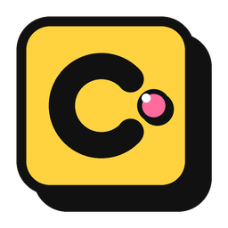

CreatorOS
Starting the CreatorOS engine…
The first start can take up to a minute.
The engine didn't start. Try quitting CreatorOS from the tray icon and opening it again.
If port 8787 is used by another program, close it first. Logs are in your app-data folder under CreatorOS/logs.